Kapitel 3: Entwurf von Datenbanken & Normalisierung
In diesem Kapitel ...
- ... analysieren Sie als Datenbank zu realisierende Zustände von Systemen.
- ... erfahren Sie mehr zur Modellierungstechnik ERM.
- ... beurteilen Sie vorliegende Tabellen.
- ... identifizieren Sie Probleme mit der Datenhaltung bestimmter Tabellen.
- ... führen Sie die Schritte der Normalisierung durch.
Kompetenz 3.0: ER-Diagramme beschreiben
Nachdem Matthias Thale nun mehr über Datenbanken weiß, möchte er diese erst einmal konzeptionell entwerfen, bevor er mit der Realisierung beginnt. Thilo Ostiem hat ihm dafür Material zusammen gesucht, anhand dessen die Modellierungstechnik erläutert werden soll. Die Methode der Modellierung, die sich durchgesetzt hat, ist das sogenannte Entity-Relationship-Modell (ERM). Damit Thilo Ostiem beginnen kann, müssen die einzelnen Elemente der Notation genauer betrachtet werden.
Arbeitsauftrag A|3.0: Beschreiben eines ER-Diagrammes
Ein Restaurant möchte eine bestehende Datenbank erweitern. Bisher sind einige Sachverhalte für die Vorratshaltung abgebildet:
- Ein Rezept hat mehrere Zutaten.
- Eine Zutat kann in mehreren Rezepten verwendet werden.
- Eine Zutat stammt immer genau aus einem Lagerort.
- Lagerorte werden für mehrere Zutaten genutzt.
So kann in dem Restaurant bisher folgendes dargestellt werden:
- Für den hauseigenen Vollkorn-Pizzateig werden Weizenmehl, Vollkornmehl, frische Hefe, Salz, Zucker, Olivenöl und Wasser benötigt.
- Vollkornmehl, Weizenmehl, Salz und Zucker werden im Trockenlager bevorratet.
- Frische Hefe muss in den Kühlschrank.
- Olivenöl ist im Flaschenlager zu finden.
- Eine Zutat hat eine Maßeinheit, bspw. wird Weizenmehl in Gramm (g) angegeben.
- Rezepte haben einen Namen, der auf der Karte ausgewiesen wird.
- ...
Beschreiben Sie mit eigenen Worten den Aufbau eines ER-Diagramms immer in Bezug auf das Beispiel:
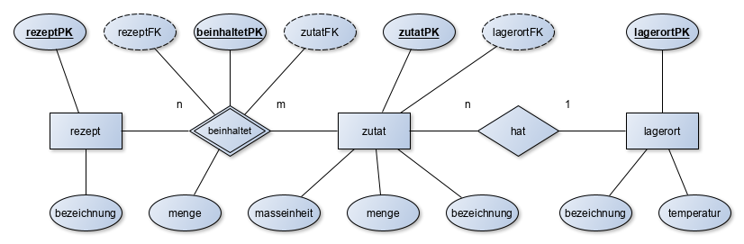
- Was sind Entitäten?
- Was sind Attribute?
- Was sind Beziehungen?
- Was sind Kardinalitäten?
- Was bedeuten die im Beispiel eingesetzten Kardinalitäten in dem Fall?
- Welche Aufgabe hat der Primärschlüssel?
- Welche Aufgabe hat der Fremdschlüssel?
- Was ist referenzielle Integrität?
Arbeitsauftrag A|3.1: Beziehungstypen
Greifen wir noch einmal das folgende Beispiel auf:
Erläutern Sie, was genau die n:m-Beziehung darstellt. Warum wird bei der n:m-Beziehung die Beziehungsentität benötigt? Auf welcher Seite steht in einer 1:n-Beziehung der Fremdschlüssel?
Informationsmaterial M|3.0: Grundlagen des Entity-Relationship-Modells (ERM)
Grundlagen & Software
Das Entity-Relationship-Modell, kurz ERM, ist ein einfaches Modell für den Entwurf von Datenbanken. Die deutsche Übersetzung des Begriffes lautet in etwa: Gegenstand-Beziehung-Modell. Das ERM besteht aus einer Abbildung, dem ER-Diagramm (kurz auch ERD genannt). Die darin verwendeten Elemente enthalten eine Beschreibung.
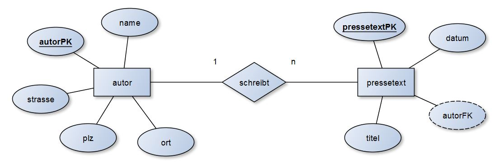
Ein erster Entwurf kann entweder handschriftlich oder mit einem Computerprogramm erfolgen. Einige Softwarevorschläge sind bspw.:
- yEd - Graph Editor - yWorks (für Einsteiger & Fortgeschrittene; erfüllt die im Unterricht verwendete Notation voll)
- MySQL Workbench (tendenziell eher für Fortgeschrittene; erfüllt die im Unterricht verwendete Notation teilweise)
Hinweis
Sie müssen hinsichtlich der IHK-Prüfungen und Klausuren unbedingt in der Lage sein, ER-Diagramme auch auf Papier zu zeichnen. Das mag zwar etwas komisch klingen, aber der Schwierigkeitsgrad ist aufgrund mangelnder Verschiebemöglichkeiten bedeutend höher und sollte zwingend ebenfalls geübt werden.
Bei dem Aufbau eines ER-Modells bzw. des daraus resultierenden ER-Diagrammes sind unterschiedliche Darstellungsformen in Gebrauch. Die bekannteste Form stellt die sogenannte Chen-Notation von Peter Chen dar. Chen gilt als Entwickler der ER-Diagramme. Die grundlegenden Elemente werden im Folgenden erklärt.
Entität (Entity)
Als Entität wird ein eindeutig bestimmbares Objekt bezeichnet. Über dieses Objekt sollen Informationen (z.B. Attribute) gespeichert oder verarbeitet werden.
Eine Entität wird im ER-Diagramm als Rechteck dargestellt und grundsätzlich im Singular beschrieben.
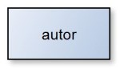
Beispiele: Artikel, Lieferer, Kunde, Person, Autor, Dokument usw.
Attribut
Ein Attribut ist ein Merkmal bzw. Kennzeichen eines Objektes, also einer Entität. Jede Entität kann beliebig viele Attribute besitzen. Das Wort Attribut lässt sich auch als Eigenschaft bezeichnen.
Ein Attribut wird im ER-Diagramm als Ellipse dargestellt. Die Attribute werden mit ungerichteten Kanten zu den Entitäten verbunden.
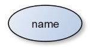
Beispiele: Artikelnummer, Name, Ort, Datum, Menge usw.
Während z.B. das Attribut "Ort" eine Eigenschaft einer Entität darstellt, sind "Hannover" oder "Oldenburg" konkrete Attributwerte. In ER-Diagrammen werden stets nur Attribute und nicht Attributwerte benutzt.
Beziehung (Relationship)
Als Relationship oder Relation bezeichnet man die Beziehung zwischen zwei Objekten (Entitäten). Durch die Nutzung von Relationships sollen im Datenbankentwurf Sachverhalte zwischen zwei Objekten dargestellt werden.
Eine Beziehung wird im ER-Diagramm als Raute dargestellt. Diese verbindet mit Linien zwei Entitäten.
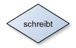
In den vorherigen Beispiel werden die Entitäten "Autor" und "Pressetext" durch die Entität "schreibt" in Beziehung gesetzt: "Autor schreibt einen Pressetext" oder anders herum "Ein Pressetext hat einen Autor". Hieraus wird auch der kleinste Standard deutlich, denn das Wort "hat" passt i.d.R. in die Beziehung. Es sollte aber ein möglichst treffendes Verb benutzt werden.
Weitere Beispiele sind: Lieferer liefert Artikel, Kunde bestellt Artikel, Schüler besucht Klasse.
Einfache Diagramme können bereits nur mit Entitäten, Attributen und Relationships entworfen werden. Für eine genauere Planung fehlen aber noch ein paar Elemente.
Primärschlüssel (Primary Key)
Ein Primärschlüssel wird verwendet, um einen Datensatz eindeutig zu identifizieren. Ein Schlüsselfeld bedient sich dabei eines Attributs.
Ein Schlüsselfeld wird durch ein Attribut (Ellipse) dargestellt. Der Text ist dabei im Gegensatz zu weiteren Attributen unterstrichen.
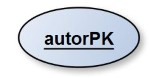
Beispiele: Autoren Nr., Pressetext Nr, Kundennummer, Personalnummer
Kardinalitäten (Cardinalities)
Kardinalitäten stellen Mengenangaben dar. Durch Kardinalitäten wird beschrieben, in welchem "Mengenverhältnis" zwei Entitäten in Beziehung zueinander stehen können. Dazu werden mathematische Mengenangaben genutzt (z.B. 1 oder n = beliebig viele).
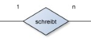
Beispiel (1:n): Ein Autor (1) schreibt (n) beliebig viele Pressetexte.
Beispiel (1:1): Ein Ehemann (1) hat (1) genau eine Ehefrau und umgekehrt.
Informationsmaterial M|3.1: Schlüsselattribute
Primärschlüssel
Wie bereits im vorherigen Informationsmaterial beschrieben ist, nehmen Primärschlüssel(-felder) in Datenbanken eine sehr wichtige Funktion ein. Alle Tabellen benötigen einen sogenannten Primärschlüssel.
Jeder einzelne Datensatz wird dabei durch einen Primärschlüssel beschrieben. Durch die Vergabe von Primärschlüsseln können z.B. Verwechslungen ausgeschlossen werden. Zum Beispiel existieren in Deutschland mehrere Personen mit dem gleichen Namen und Geburtsdatum (z.B. Tim Jansen, geboren am 19.12.1980). Durch die Vergabe von Primärschlüsseln, z.B. einer Personal- oder Sozialversicherungsnummer, können die einzelnen Datensätze ohne Verwechslung unterschieden werden. Ein Primärschlüssel kann dabei aus Ziffern, Buchstaben oder Kombinationen (alphanumerisch) gebildet werden. Entscheidend ist, dass ein Primärschlüssel einzigartig ist, z.B. durch Vergabe einer durchlaufenden Nummer, und er sich niemals ändert. Ein Kunde eines Unternehmens erhält z.B. für die Dauer der Geschäftsbeziehungen eine einzigartige Kundennummer. Mithilfe von Primärschlüsseln können auch Beziehungen zwischen Tabellen in einer Datenbank hergestellt werden.
Erst durch einen Primärschlüssel ist eine Beziehung (Relation) zwischen zwei Tabellen möglich.
Beispiel: Nachfolgend wird eine Pressetext-Nr. als Primärschlüssel verwendet. In diesem Fall setzt sich die Nummer aus Teilen des Datums und einer fortlaufenden Nummer zusammen:
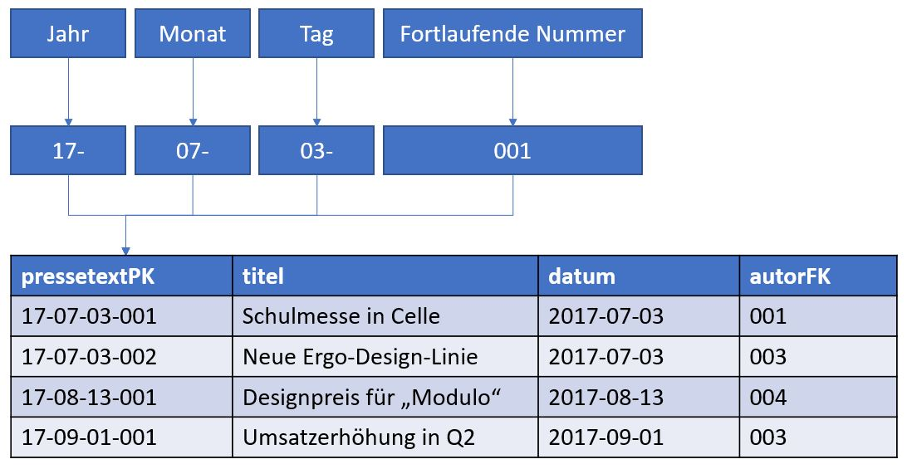
Primärschlüssel können, wie in dem vorhergehenden Beispiel, entweder selbst generiert werden, oder man greift auf bereits "bestehende" Primärschlüssel zurück. Eine Buchhandlung kann sich z.B. der ISBN-Nummer bedienen. Bei einem Supermarkt bietet sich die EAN (die Nummer, die der Barcode darstellt) für die geführten Artikel an.
Die folgenden Schlüsselarten lassen sich bei einem Datenbankentwurf unterschieden.
Natürlicher Primärschlüssel
Als natürlichen Primärschlüssel können alle Schlüssel verstanden werden, die bereits durch ein Objekt (Entität) gegeben sind.
Ein Buchgeschäft kann z.B. die ISBN eines Werkes einfach in die eigene Datenbank übernehmen oder ein Vermieter von E-Bikes übernimmt die Seriennummer der Fahrzeuge.
Künstlicher Primärschlüssel
Künstliche Primärschlüssel werden oft vergeben, wenn kein natürlicher Schlüssel vorliegt oder übernommen werden soll. Künstliche Primärschlüssel werden bei dem Anlegen der Datenbank festgelegt.
Beispiele: Ein Unternehmen vergibt Kundennummern, um seine Kunden eindeutig voneinander zu unterscheiden.
Zusammengesetzter Primärschlüssel
Ein zusammengesetzter Primärschlüssel ist ein Schlüssel, der durch die Kombination von verschiednenen Attributen erzeugt wird. In der Praxis kann ein zusammengesetzter Primärschlüssel zu Problemen führen. Bei einer Rechnung könnte der Primärschlüssel z.B. aus dem Datum und der Kundennummer erzeugt werden. Falls ein Kunde zwei Rechnungen an einem tag ausgestellt bekommen würde, wäre ein Schlüssel doppelt vergeben. Ein "reiner" zusammengesetzter Primärschlüssel ist daher selten anzutreffen. Entweder wird dieser um einen künstlichen Primärschlüssel ergänzt (z.B. eine fortlaufende Nummer) oder ersetzt.
Fremdschlüssel
Ein Fremdschlüssel wird benötigt, um zwei Tabellen bzw. zwei Objekte miteinander zu verknüpfen. Was in der einen Tabelle ein Fremdschlüssel ist, ist in der anderen Tabelle ein Primärschlüssel. In einem ER-Diagramm wird der Fremdschlüssel gestrichelt umrandet (andere Notationen unterstreichen den Fremdschlüssel gestrichelt).
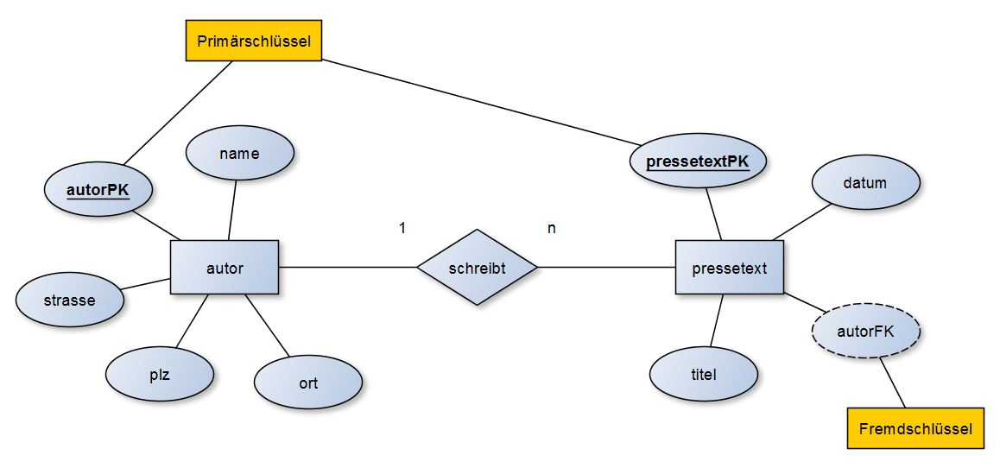
Das abgebildete ERM kann als folgende Tabellen verstanden werden:
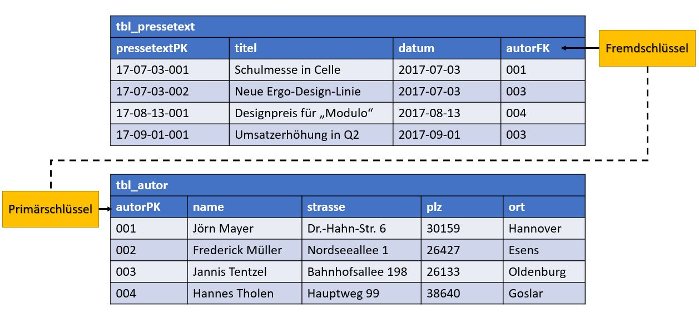
Informationsmaterial M|3.2: Grundlagen der Beziehungstypen / Kardinalitäten
Die Beziehung von Objekten (Entitäten) untereinander wird durch Kardinalitäten dargestellt. In einem ER-Diagramm kann somit dargestellt werden, wie viele Objekte mit einem anderen Objekt in Beziehung stehen können. Die Bestimmung und Festlegung von Beziehungstypen stellt eine wichtige Grundlage des Datenbankentwurfes dar.
1-zu-1-Beziehung (1:1)
Bei einer 1-zu-1-Beziehung steht jede Entität des einen Entitätstyps mit einer Entität des anderen Entitätstyps in Beziehung und andersherum. 1-zu-1-Beziehungen sind relativ selten, da schnell Ausnahmen entstehen können.
Beispiel: Eine Frau ist mit genau einem Mann verheiratet. Die Darstellung in einem ER-Diagramm ist wie folgt:
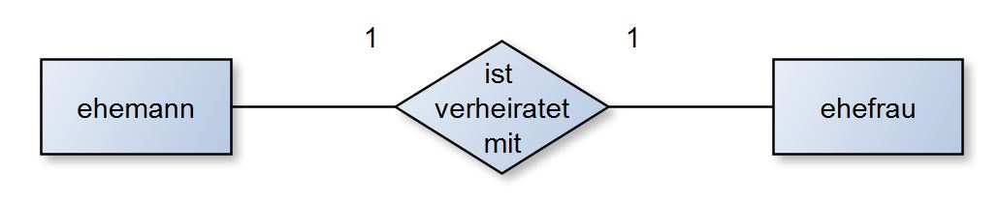
Ein weiteres Beispiel: Ein Schiff hat genau ein Schiffskennzeichen.
Die Zuordnung des Fremdschlüssels in der 1:1-Beziehung ist in beiden Tabellen möglich. Manchmal erscheint eine Tabelle logischer, als die andere; dies ist fallabhängig.
1-zu-n-Beziehung (1:n)
Die 1-zu-n-Beziehung ist die häufigste Kardinalität. Eine einzelne Entität des einen Entitätstyps steht dabei mit mehreren Entitäten eines anderen Entitätstyps in Beziehung. Sofern keine 1-zu-1-Beziehung vorhanden ist, wird bei einem Datenbankentwurf angestrebt, eine 1-zu-n-Beziehung herzustellen.
Beispiel: In der Tabelle aus den vorherigen Beispielen hat ein Pressetext z.B. immer genau einen Autor. Ein Autor kann aber mehrere Pressetexte verfassen. Die Darstellung in einem ER-Diagramm ist wie folgt:
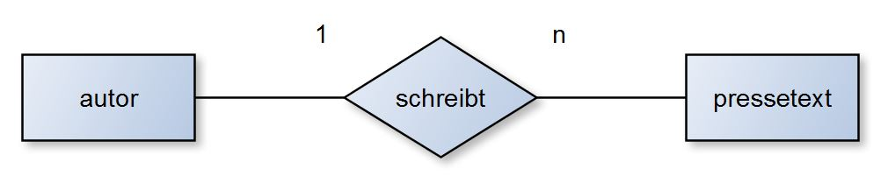
Ein weiteres Beispiel: Eine Abteilung besteht aus mehreren Mitarbeitern. Jeder Mitarbeiter ist genau einer Abteilung zugeordnet.
Der Fremdschlüssel wird bei der 1:n-Beziehung immer auf der n-Seite hinzugefügt.
n-zu-m-Beziehung (n:m)
Jede Entität eines Entitätstyps steht mit beliebig vielen Entitäten des anderen Entitätstyps in Beziehung. Ebenso verhält es sich umgekehrt. Ein naheliegendes Beispiel sind Mitarbeiter und Projekte. Während ein Mitarbeiter an mehreren Projekten arbeiten kann, sind in einem Projekt auch mehrere Mitarbeiter beschäftigt. Dieses Beispiel würde wie folgt in einem ER-Diagramm dargestellt werden:
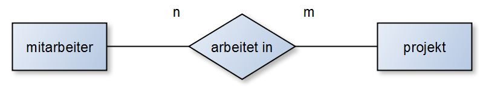
In der Praxis sind n-zu-m-Beziehungen in Datenbanken schwierig zu handhaben, genau genommen müsste die Darstellung mit einer Beziehungsentität gewählt werden. Diese wird als Doppel-Raute dargestellt. In manchen ER-Diagrammen findet man auch Darstellungen mit einer Raute in einem Rechteck (also der Mischung der Symbole von Entität und Beziehung). Das Beispiel sähe dann als Beziehungsentität wie folgt aus:
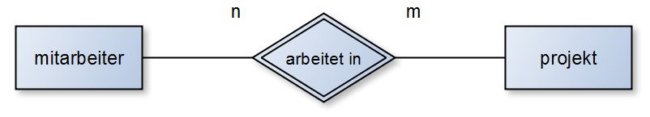
Werden im Beispiel die Primär- und Fremdschlüssel ergänzt erhalten wir folgende Darstellung:
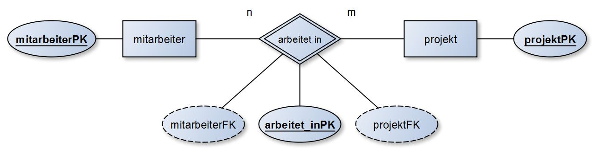
Eine Umsetzung in den Datenbanksprachen ist entgegen der ER-Diagramme nicht möglich. Dies liegt daran, dass Werte immer atomar abgespeichert werden müssen. Also könnten in einer Zelle in der Tabelle nicht mehrere Angaben gemacht werden. Es könnten z.B. Redundanzen und Inkonsistenzen auftreten. Man bedient sich daher eines Tricks: einer zusätzlichen Tabelle. Im Beispiel wird aus der Beziehung arbeitet in die Tabelle / Beziehungsentität arbeitet_in geschaffen. Hierbei stehen Mitarbeiter und arbeitet_in im Verhältnis 1:n. andererseits stehen arbeitet_in und Projekt ebenfalls im Verhältnis 1:n.
Bei einer Beziehungsentität wird ein neuer Primärschlüssel mit dem Namen der vorherigen Beziehung gebildet. Diesem werden jeweils die Fremdschlüssel beider angeschlossener Tabellen zugeordnet.
Kompetenz 3.1: ER-Diagramme erstellen
Der Aufbau eines ERM ist nun bekannt, folgend soll ein näherer Blick auf die Beziehungstypen geworfen werden. Außerdem ist ein erstes ER-Diagramm zu erstellen.
Arbeitsauftrag A|3.2: ERM - Beziehungstypen
Interaktives Element im Moodle-Kurs
Arbeitsauftrag A|3.3: Das erste ER-Diagramm
Im Rahmen Ihrer Tätigkeit in der Bertram System Electronics GmbH & Co. KG erstellen Sie Datenbanken für verschiedene Kunden. Einer der Großkunden ist der Hannover Airport mit vielen verschiedenen Subunternehmen und Airlines. Die AirHannover hat Ihnen folgende Fakten übermittelt und bittet Sie, hierzu das entsprechende ERM zu erstellen:
- Das Personal der Fluggesellschaft AirHannover hat einen Nachnamen und einen Vornamen.
- Jedes Personalmitglied bekleidet genau einen Dienstrang, der sich durch eine Bezeichnung und eine Gehaltsklasse auszeichnet.
- Ein Dienstrang kann von mehreren Personalmitgliedern bekleidet werden.
- Jedes Personalmitglied begleitet mehrere Reisen, die durch einen ReisePK und ein Datum beschrieben werden.
- Eine Reise wird von mehreren Personalmitgliedern begleitet.
Aufgaben:
- Erstellen Sie das ERM.
- Ergänzen Sie falls nötig Schlüsselattribute.
- Erstellen Sie das Datenbankschema in Kurzschreibweise.
Informationsmaterial M|3.3: Kurzschreibweise
Die Kurzschreibweise zu einer Datenbank ist der zweite Modellierungsschritt. Da in den ER-Diagrammen in der Regel nur die Schlüsselattribute (PK & FK) eingetragen werden, sollen in der Kurzschreibweise auch die normalen Attribute betrachtet werden.

Die Kurzschreibweise zum oben genannten Beispiel sähe wie folgt aus*:
tbl_rezept(rezeptPK, bezeichnung)
tbl_beinhaltet(beinhaltetPK, rezeptFK, zutatFK, menge)
tbl_zutat(zutatPK, lagerortFK, masseinheit, menge, bezeichnung)
tbl_lagerort(lagerortPK, bezeichnung, temperatur)
(*) der FK wird, wenn die Kurzschreibweise per Hand geschrieben wird, gestrichelt unterstrichen.
Informationsmaterial M|3.4: ERM-Konventionen
Entität
- Darstellungsform: Rechteck
- im Singular
- klein geschrieben
- keine Umlaute/Sonderzeichen/Leerzeichen
Attribut
- Darstellungsform: Ellipse
- im Singular
- klein geschrieben
- keine Umlaute/Sonderzeichen/Leerzeichen
Primärschlüsselattribute
- Darstellungsform: Ellipse, Attributname unterstrichen
- Attributname lautet wie die Entität mit angehängtem "PK"
- im Singular
- klein geschrieben
- keine Umlaute/Sonderzeichen/Leerzeichen
Fremdschlüsselattribute
- Darstellungsform: gestrichelte Ellipse oder Ellipse mit gestrichelt unterstrichenem Attributnamen
- Attributname lautet wie die Entität, auf die sich der Name bezieht mit angehängtem "FK"
- im Singular
- klein geschrieben
- keine Umlaute/Sonderzeichen/Leerzeichen
Beziehungen
- Darstellungsform: Raute
- Kardinalitäten gerne in die Nähe der Raute schreiben
- Kanten der Beziehungen immer parallel zum Seitenrand, nicht quer/diagonal zeichnen
- möglichst treffend benennen, aber "hat" funktioniert immer
- im Singular
- klein geschrieben
- keine Umlaute/Sonderzeichen/Leerzeichen
- bei mehreren Worten ggf. mit Unterstrichen "_" teilen (z.B.
gehoert_zu)
Beziehungsentitäten
- Darstellungsform: Doppelte Raute oder Rechteck, das eine Raute umzeichnet
- möglichst treffend benennen, hier "hat" vermeiden
- im Singular
- klein geschrieben
- keine Umlaute/Sonderzeichen/Leerzeichen
- bei mehreren Worten ggf. mit Unterstrichen "_" teilen (z.B.
gehoert_zu)
Kompetenz 3.2: Prozess der Normalisierung berücksichtigen
Thilo Ostiem hat Matthias Thale bereits viel weitergeholfen, sodass erste ER-Diagramme entstanden sind. Zwischen den Recherchen zu Datenbanken fällt nun Matthias Thale ein Ausdruck des Außendienstes in die Hände. Hierauf wurden potenzielle Neukunden erfasst. Diese Daten möchte er nun so aufbereiten, dass sie in eine Datenbank eingetragen werden können.
Dabei ist ihm klar: es dürfen keine Daten redundant eingetragen werden oder Widersprüche auftauchen. Er bekommt den Tipp von Thilo Ostiem, sich einmal das Themengebiet der "Normalisierung" anzusehen.
Arbeitsauftrag A|3.4: Tabellen beurteilen
Beurteilen Sie die vorliegende Tabelle (s.u.). Welche Probleme könnten sich bei der Erfassung der vorliegenden Tabelle in einer Datenbank ergeben?
Stellen Sie erste Verbesserungsvorschläge für die abgebildete Tabelle zusammen.
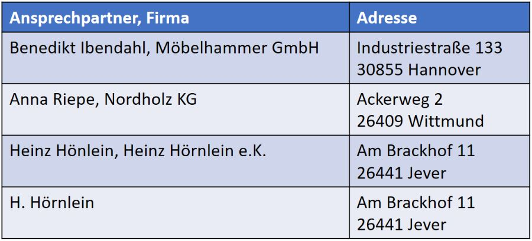
Arbeitsauftrag A|3.5: Prozess zur Normalisierung
- Erläutern Sie die Problematik in Datenbanken, wenn Redundanzen auftreten sollten. Nennen Sie Beispiele.
- Beschreiben Sie in eigenen Worten die Notwendigkeit der Normalisierung einer Tabelle.
- Zählen Sie in Stichpunkten die Kriterien auf, die notwendig für das Erreichen der ersten, der zweiten bzw. der dritten Normalform sind.
Informationsmaterial M|3.5: Normalisierung einer Datenbank
Redundanzen / Notwendigkeit einer Normalisierung
Wie bereits bekannt, ist es eine Grundregel, Redundanzen in Datenbanken zu vermeiden. Gleiche Inhalte dürfen somit nicht in mehreren Datenfeldern vorkommen. Ein Datenfeld darf außerdem nur einen einzigen Eintrag enthalten.
Beispiel: Statt dem Datenfeld "Name" werden die Felder "Vorname" und "Nachname" angelegt.
Liegen "Verstöße" gegen diese Grundregel vor, müssen diese Daten in Normalform gebracht werden. Diesen Prozess nennt man auch Normalisierung.
In der Regel wird dazu eine schrittweise Vorgehensweise angewandt, sofern die Daten nicht bereits in geeigneter Form vorliegen. Unnormalisierte Tabellen wie in der Ausgangssituation werden auch als nullte Normalform bezeichnet. Die Tabellen einer relationalen Datenbank werden zuerst in die erste Normalform, dann in die zweite Normalform und letztendlich in die dritte Normalform gebracht. Erst Tabellen, die sich in der dritten Normalform befinden, eignen sich für die Verwendung in einer relationalen Datenbank.
Erste Normalform
Die erste Normalform besagt, dass kein Datenfeld mehrfach in einer Tabelle vorkommen darf. Mehrfach enthaltene Datenfelder werden aus der Tabelle entfernt.
Tabelle in der nullten Normalform:
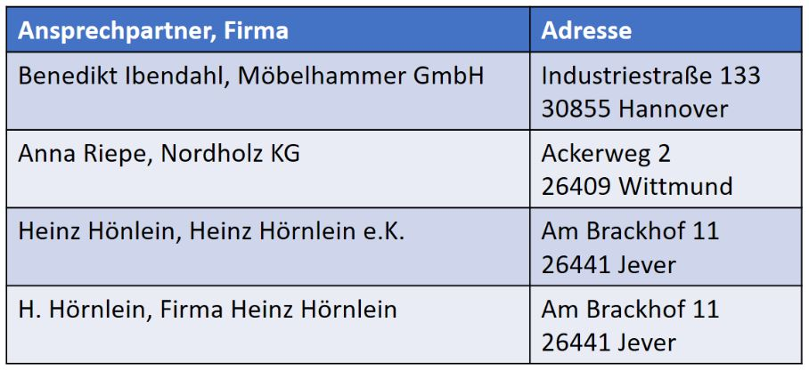
Tabelle in der ersten Normalform:
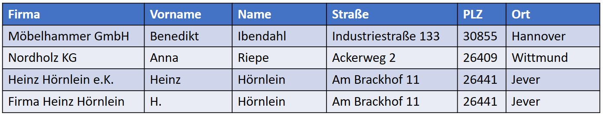
Zweite Normalform
Für die zweite Normalform muss zunächst die erste Normalform erfüllt sein. Jedes Datenfeld eines Datensatzes, das selbst kein Schlüssel ist, muss vom Schlüsselfeld abhängen.
In unserem Beispiel wurde noch kein Schlüsselfeld vergeben. An dieser Stelle bietet sich eine Vergabe eines künstlichen Primärschlüssels an. Die potenziellen Kunden erhalten eine Kundennummer. Alle weiteren Datenfelder bzw. Attribute (z.B. Straße, Ort etc.) sind vom Schlüsselfeld abhängig und können so bestehen bleiben.
Tabelle in der zweiten Normalform:
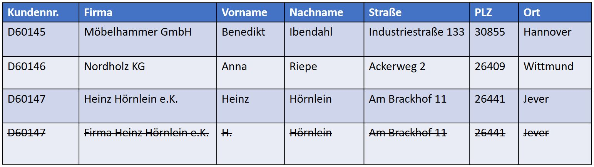
Bei der Vergabe von Primärschlüsseln wird deutlich, dass die letzten Einträge doppelt angelegt wurden, also redundant sind. Redundanzen werden spätestens an dieser Stelle eliminiert.
Dritte Normalform
Für die dritte Normalform muss die (erste und) zweite Normalform erfüllt sein. Darüber hinaus darf jedes Datenfeld eines Datensatzes, das kein Schlüssel (-feld) ist, nur vom Schlüsselfeld und nicht von anderen Feldern eines Datensatzes abhängig sein.
Somit dürfen keine Abhängigkeiten zwischen weiteren Feldern eines Datensatzes bestehen. Ist dies der Fall, wird eine weitere Tabelle angelegt.
Tabelle in der dritten Normalform:
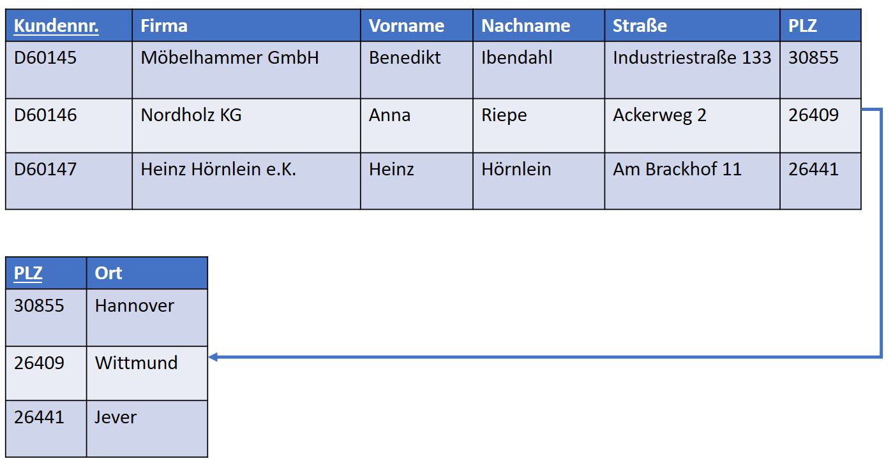
In dem Beispiel wird deutlich, dass eine Abhängigkeit zwischen Ort und Postleitzahl besteht und somit ein Verstoß gegen die dritte Normalform vorliegt. Um diese Abhängigkeit aufzulösen, wird eine zweite Tabelle, ein "PLZ-Verzeichnis", angelegt. Die Postleitzahl fungiert hierbei als natürlicher Primärschlüssel. Über die Abfrage der PLZ kann nun automatisch der zugehörige Ort angezeigt werden.
Zusätzliches Material, weitere Übungen & Tipps
Die folgenden Übungen und Tipps & Tricks dienen Ihrer persönlichen Wiederholung und Vorbereitung auf Klassenarbeiten, Prüfungen etc.
Ich kann, weil ich will, was ich muss! (Immanuel Kant)
Zusatzmaterial
// TODO Links einfügen
Lizenz

Der PV-DB-Kurs von Oliver Schwenke & André Neumann ist lizenziert unter einer Creative Commons Namensnennung - Nicht-kommerziell - Weitergabe unter gleichen Bedingungen 4.0 International Lizenz. Fragen, Hinweise etc. an neumann@mmbbs.de.